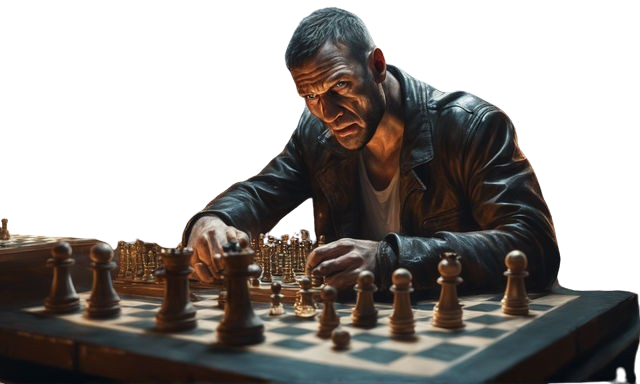
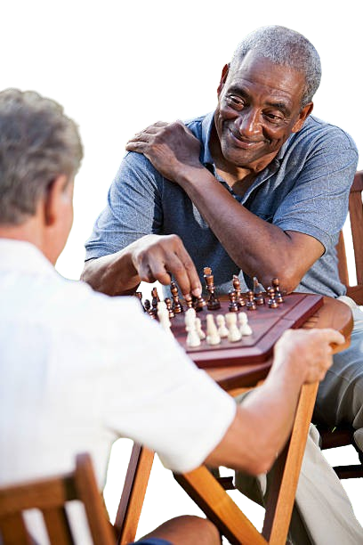

Chess requires a lot of focus and concentration – to the point where
you may end up so focused on the game that the rest of the world
around you temporarily fades away. For many players, chess is a way to
forget about the stresses of the world, and focus on the game at hand.

There are no age, gender, cultural, or language barriers in the game
of chess – meaning you can play the game with anyone. During chess
classes, children get a chance to socialize with others, and have fun
in the process of learning how to play. And since the game can be
played online, you can easily reach players from around the world
